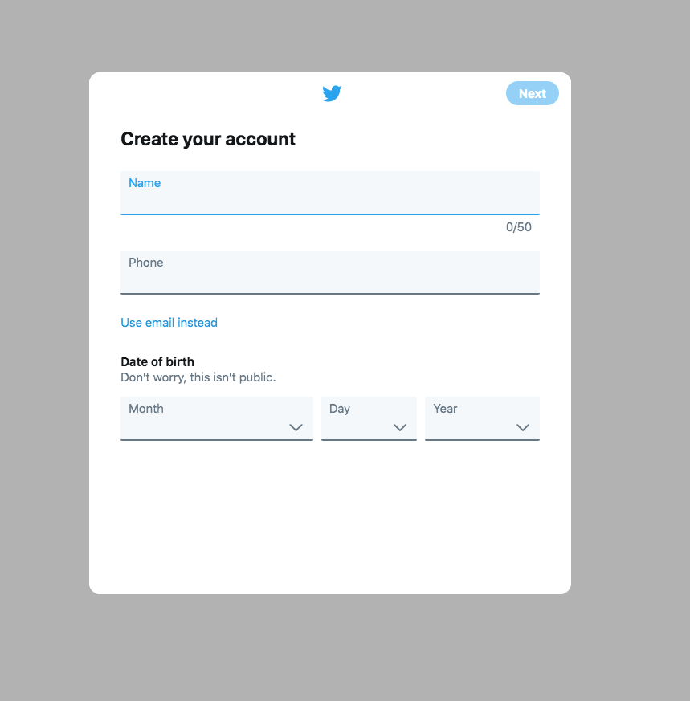
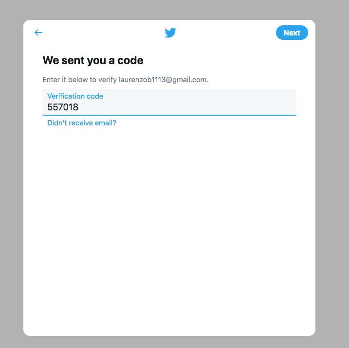
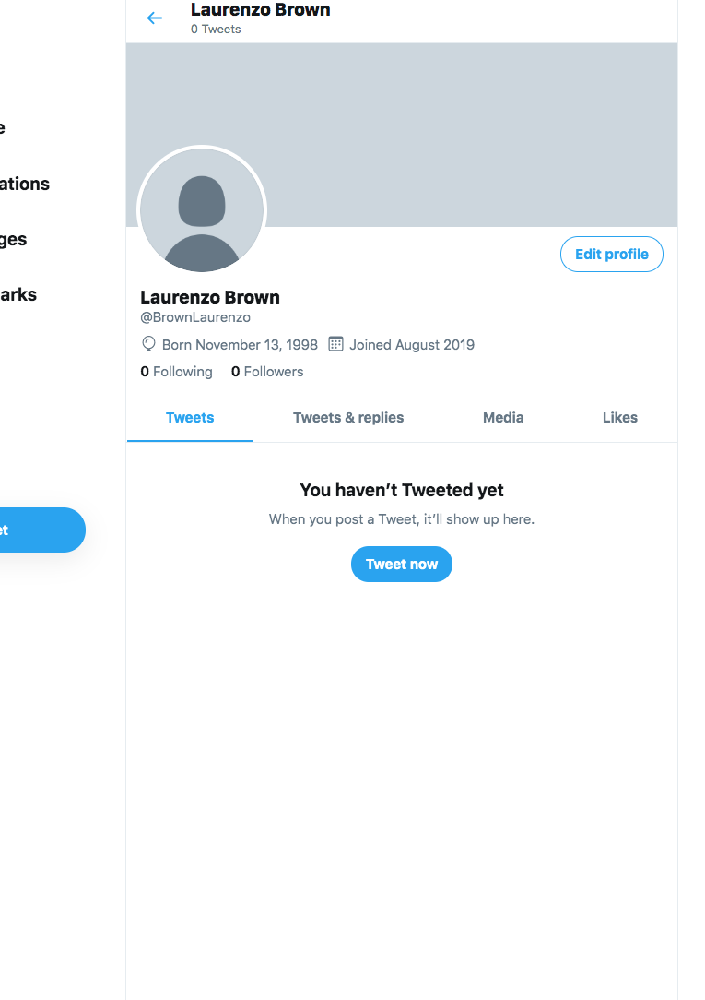
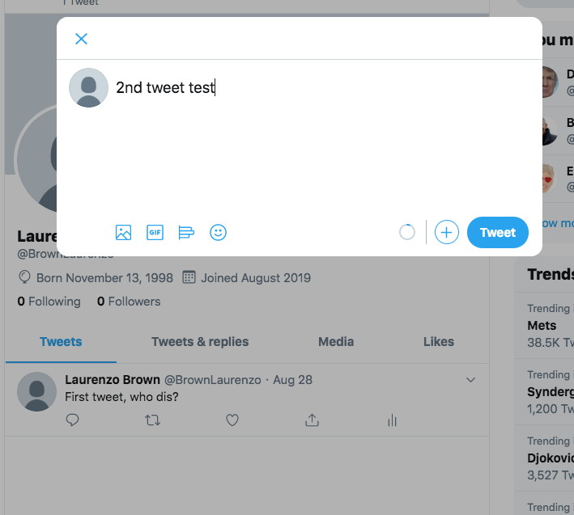
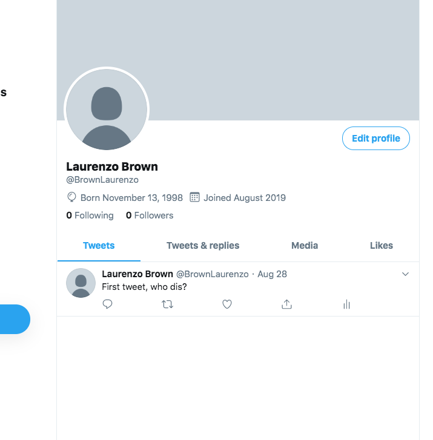
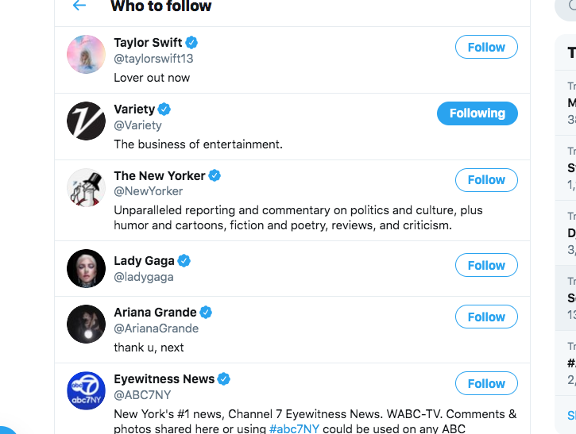

Twitter Login Process
By Laurenzo Brown
Step One

The site first asks you to fill out an application with your personal information so it can create your profile for the site.
Step Two

After you enter your email on the application, the site will then send you a email containing a varification code that you must enter in the box (as shown above) to complete the creation of your profile.
Step Three

Your profile is then created with all the information that you entered on display and you then can start adding new information to your account.
Step Four

For twitter, you can add information to your profile by clicking on the tweet button and then enter any message, gif, or image you want to display for yourself and any other who decides to view your profile.
Step Five

Once the information is entered, it appears and stays on your profile till you decide to delete it. Others can then like, follow, or interact with your tweet after you post.
Step Six

Social interaction through twitter can be done by liking a post or following a person's account to see their latest posts and once done, the site lets you know you are following them, as shown in the image above.